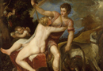

Aphrodite
To begin, we should go back to Hesiod. In his Theogony, he describes even her birth as fecund, narrating her emergence from the severed genitals of the sky god Uranus:
'And when at first he had cut off the genitals with the adamant and thrown them from the land into the strongly surging sea, they were borne along the water for a long time, and a white foam rose up around them from the immortal flesh; and inside this grew a maiden. First she approached holy Cythera, and from there she went on to sea-girt Cyprus. She came forth, a reverend, beautiful goddess, and grass grew up around her beneath her slender feet. Gods and men call her "Aphrodite", the foam-born goddess [in Greek 'aphros' means foam] and the well-garlanded "Cytherian", since she arrived at Cyther, and "Cyprogeneia", since she was born on sea-girt Cyprus, and 'Genial", since she came from from the genitals".
{kind=link}
{kind=link}
In Homer’s Iliad the story is less spectacular, where she is said in book three just to be the daughter of Zeus and Dione, but regardless of her birth, she displays similar character traits; she is a female figure that combines seductive charm, fertility, and deception, characteristics which are also found in the first woman Pandora (cf. Hesiod, Works and Days lines 60-8).
The virgin Artemis clearly does not mix well with the charming seductress Aphrodite, but the two goddesses were nonetheless often placed in opposition in Greek literature. One of the most striking juxtapositions of the two comes at the beginning of the Homeric Hymn to Aphrodite which is included in full in the textbook reading associated with this Essential Element. After the Hymn opens with general praise of Aphrodite and her ability to conquer man, beast and god in love, the poet presents three exceptions to the rule of Aphrodite’s universal domination; Athena, Artemis and Hestia, all virgin goddesses who could not be tamed by Aphrodite's power. This presentation of exceptions is used at the beginning of the poem to build suspense; the three exceptions here act as a foil for the point which will be made a bit later in the hymn, namely that Aphrodite can conquer even Zeus, the most powerful of gods, in love and make him sleep with mortal women. This juxtaposition also, however, places Aphrodite’s power in relief in a more general way; against the backdrop of three virgin exceptions, the importance of erotic love for human nature is evident.
This same type of issue is dealt with again in later Greek tragedy of the fifth century B.C.E., when Aphrodite and Artemis are once again juxtaposed in the Hippolytus of the Athenian playwright Euripides. Hippolytus, the son of the Athenian king Theseus, is a great hunter, a follower of Artemis, who defiantly avoids sexual activity and any worship of Aphrodite. The play opens with Aphrodite speaking to the audience, telling of her anger at Hippolytus for disregarding her in favour of Artemis. She curses him by making his step-mother Phaedra fall in love with him. She confronts him, albeit reluctantly, with her love, and when denied his love, kills herself and leaves a note telling her husband Theseus that it was Hippolytus who lusted after her. Theseus, upon reading the note, curses his son to die. Against the background of this grotesque picture of love and family betrayal is the constant juxtaposition of the two extremes: the defiant virginity of Artemis and Hippolytus and the deceptive desire of Aphrodite, two sides of human nature.
In literature, it is often not made clear whether Aphrodite is to be understood in her anthropomorphic state as a goddess or as the natural force and power of love and seduction. In this respect, it is worth returning to the first line of the Hymn to Aphrodite, in which the poet calls upon the Muse to sing of the 'works of Aphrodite'. In comparison, in other hymns to gods, the poet regularly calls upon the Muse to sing of the deity her- or himself. In the case of Aphrodite, the poet's language leaves open the question of whether the poem will deal with the actions of the anthropomorphic deity Aphrodite, or more generally her works. It in fact does both, by detailing her actual affair with the mortal Anchises, but also the power of sexual love and desire: in the case of this particular story, Zeus employs Aphrodite's own powers to make the love goddess herself fall for Anchises. In other words, the first line, whether intentionally or not, leaves the door open for the bitter irony of the narrative, namely that Aphrodite will be conquered by her own power.
Before looking in more detail at the story recounted in the Hymn to Aphrodite, it is worth pausing for a moment to look back to the Iliad to see how the blurred distinction between Aphrodite as goddess and Aphrodite as the force of love can inform our understanding of that poem. At the end of the third book of the Iliad, Paris (whose abduction of Helen from the Greek Menelaus is the cause of the Trojan war) is transported from the battlefield in a cloud by Aphrodite, who then incites Helen to sleep with him. Aphrodite takes the form of Helen’s nurse and says to her: 'Quickly — Paris is calling for you, come back home! There he is in the bedroom, the bed with inlaid rings—he's glistening in all his beauty and his robes! You'd never dream he's come from fighting a man, you'd think he's off to a dance or slipped away from the dancing, stretching out at ease.’ Helen at first resists Aphrodite, before she gives in and agrees to sleep with a man to whom she is attracted, but with whom she has started a devastating war. As Aphrodite speaks in her guise as a nurse, one wonders whether Helen’s struggle is with a physical goddess, or the internal force of her own desire. This adds a powerful psychological element to the scene which explores the complicated human emotions behind Helen's attraction to Paris. Greek literature at times represents Helen as a victim abducted by Paris against her will, but at other times she is portrayed as a calculating individual in love with Paris and well-aware of what she does. In the Iliad her motivations and feelings are complex and fall at both ends of this spectrum.
Let us then look a bit more closely at the myth which is told of Aphrodite in the Homeric Hymn to Aphrodite. Aphrodite has, as usual, been inciting the gods to mix with mortal men and women, and in particular she has caused Zeus to do this. His affairs with mortal women in Greek mythology are, as we have seen, numerous. For an immortal god, however, it is a great embarrassment to sleep with a mortal, particularly so as the result of any love-affair with a mortal was almost certainly a semi-divine child, a constant reminder of the affair itself. One day, so the hymn tells us, Zeus became fed up with this and decided to turn the tables on Aphrodite, in order that she might stop her boasting amongst the gods. Zeus makes her fall in love with the mortal shepherd Anchises, and Aphrodite proceeds to seduce him. She must convince him that she is mortal, as no man in his right mind would willingly sleep with a goddess (it is commonplace in mythology that a mortal man who sleeps with a goddess ends up in a bad way, possibly impotent). Aphrodite is successful and, after sleeping with him, expands upon how she will give birth to Aeneas as a result of the union: Aenease is the famous Trojan warrior who will later be the founder of Rome (as recounted in the Latin poet Virgil’s Aeneid). Apart from narrating the birth of an important warrior of the Trojan saga, this myth reveals much about the all-consuming power of love itself; as discussed above, irony abounds, for the statement at the beginning of the hymn that Aphrodite’s power can conquer all is ratified by the very fact that not even Aphrodite can resist herself. It is incidentally, worth noting that the specific story of Zeus’ revenge told in the hymn is unique to all of Greek and Latin mythology, although Aphrodite’s affair with Anchises was well known, and was treated in both Greek and Latin poetry. (see image 3)
{kind=link}
Now, much which is found in the Hymn is revealing of the origins of the goddess Aphrodite. Although her origins as a goddess in the Greek pantheon are not fully known, it is clear that she is a goddess who developed as a composite which included a good deal of influence from the Near Eastern world, where Aphrodite finds counterparts in the Sumerian and Akkadian Ishtar and Inanna. Aphrodite’s major religious centre in the Greek world was in Cyprus, a place where Aphrodite developed as a goddess, and a place in which there was much influence from the East. This can be found represented in the Hymn. When Aphrodite arrives to speak to Anchises she is dressed from head to foot in jewellery. Aphrodite is perhaps better known in the West in her nude form, but coming from the East, she is always described with elaborate clothing, and is represented that way in literature. (see images 4–5). The elaborate description in the Hymn to Aphrodite might be an example of the influence of the Near East on the development of these myths. Similarly, the danger for a mortal man to sleep with a goddess, mentioned above, is a motif also found in the Near East, as is Aphrodite’s power over animals. One can find something similar with respect to the Near Eastern love-goddess Inanna. In the Sumerian poem, The descent of Innana into the Underworld one hears that animals no longer mate when Inanna is not on earth due to her descent into the underworld.
{kind=link}
{kind=link}
Let us, however, come back to the narrative of the Hymn to Aphrodite which tells of the revenge of Zeus; revenge which leads to the shame of love personified. What are we to make of this unique narrative? How are we to interpret it? For this is a question about which no common opinion has ever formed in the academic community.
It is important to stress at the outset that the Hymn to Aphrodite stands apart from the other three extant long Homeric Hymns, to Demeter, Apollo and Hermes. In the case of Demeter and Apollo, the tone is very different. The narratives of those two hymns are solemn and serious, as they tell of the awesome power of the two gods and their achievements in founding religious sites. More similar to Aphrodite is the playful tone of the Hymn to Hermes, in which the precocious young messenger god steals Apollo's cattle, and speaks with tounge in cheek to his father Zeus. But even in this case, the narrative is celebrating the precocious power of the young god; theft, if done cleverly, was not a morally reprehensible thing for the god. The Hymn to Aphrodite stands out mostly because, at face value, its narrative is not a celebration of the goddess Aphrodite at all. Rather, the immediate impression is given that it mocks her, as it recounts her fall at the hands of Zeus. There is no other hymn, whether short or long which treats a god in this way.
The traditional interpretation of this hymn is that, at its heart, it is not a hymn to Aphrodite at all, but rather a celebration of Aeneas and his descendants, intended to pay honour to a family claiming descent from Aeneas who held power in the Troad. We hear from several Greek historians that such a family did indeed exist in the Troad. This hypothesis would certainly explain the great amount of emphasis which is placed upon Aeneas and his lineage in the Hymn to Aphrodite, and it would seem to be corroborated by a long passage in Iliad 20, in which Poseidon prophesies the glory future of the race of Aineias, placing more explicit emphasis on genealogy than is found anywhere else in early literature of this type. Both passages speak clearly of the fact that Aeneas will rule amongst the Trojans.
But, what are some other possible functions of this myth. One possibility is that the myth marks the end of Aphrodite's mixing of gods and mortals in love. Aphrodite proclaims at lines 249ff. that although she once proudly mixed all gods with mortal women, she will no longer be able to boast about this activity amongst the gods. This is the realization of Zeus' intention stated in lines 46-8. At face value, this is a matter of revenge for Zeus, who here manages to embarrass Aphrodite. It could also, however, imply a renunciation by Aphrodite of the practice of deceiving Zeus and the other gods in this way altogether. If this is the case, the hymn is an explanation of why gods and humans no longer interact when they once did.
Alternatively, the very embarrassment of Aphrodite can give this myth meaning for us. Zeus has in the end been successful, and the laughing, boasting Aphrodite presented in the opening lines of the poem has been humbled and shamed. The poignant irony of Zeus’ victory should not be overlooked here, for the outcome represents a very real aspect of sexual love; Aphrodite, the physical embodiment of love, must at times suffer painful shame and remorse, just as countless lovers have and will continue to do. Importantly, this motif is known elsewhere in early epic. Aphrodite’s shame amongst the gods is also a consequence of her affair with Ares recounted by Demodocus in Homer’s Odyssey book 8. When Hephaestus’, who is Aphrodite’s husband, learns of the affair between his wife and Ares, he sets a trap about their bed. And when his chains trap Aphrodite in bed with Ares, all of the gods stand around and laugh at her (Odyssey 8.321ff.). This is an episode that the poet of the Hymn to Aphrodite probably knew. There too Hephaestus, like Zeus, is getting his revenge against Aphrodite, and the goddess of love suffers shame before the gods. (see image 6)
{kind=link}
It is also the case that there is a recurrent juxtaposition of mortality and immortality in the hymn. This is a common motif elsewhere in early Greek literature, and naturally so in this poem as well, in which the boundaries between god and man are quite literally crossed; Aphrodite's disguising herself as a young maiden when she approaches Anchises itself blurs the distinction between mortal and divine, and the affair closes with the explicit statement that a mortal has slept with a goddess. The incompatibility of men and gods in love is then later developed in detail in the stories of Ganymedes and Tithonus. Even the elaboration upon the semi-divine Nymphs towards the end of the myth explores the question of life and death.
Moving on from the Hymn to Aphrodite, let’s look at some other myths concerning Aphrodite. Much of the mythology which surrounds Aphrodite has some connections to the Near East, of which one example is the myth of Adonis, a second mortal with whom Aphrodite falls in love. He too is of Near Eastern origin – his name is Semitic (‘Adon’ means ‘Lord’). In mythology Aphrodite falls in love with him, hides him in a chest and gives him to Persephone (who lives part of the time in the underworld); this was, as one might expect, a bad move, as Persephone falls in love with Adonis and does not want to give him back. Zeus then solves the matter by ruling that Adonis should spend four months of the year with Persephone in the underworld and four with Aphrodite; he is later worshipped as a divine being who dies every year. Much like Persephone, one can understand Adonis as representing the seasons in death and birth, altogether appropriate for a character who is connected to the fertility goddess Aphrodite. This connection with nature is perhaps also represented in his birth from the Myrrha plant which is narrated by Ovid in the tenth book of his Metamorphoses. Comparable to the Hymn to Aphrodite is the fact that Aphrodite is once again conquered by her own power; this time, Ovid tells us that Cupid scratched the breast of his mother Venus with one of her arrows, and promptly fell in love with Adonis. He is not locked in a chest in Ovid, but rather he is killed while on the hunt by the tusk of a boar, and changed by Aphrodite into a flower (the anemone, of the colour of a pomegranate and without scent). Once again Adonis’ death and rebirth are symbolized by his vegetal form. Adonis and Aphrodite became a popular theme for later literature and art. (See Images 7-8)
{kind=link}
{kind=link}
Another prominent myth in which Aphrodite is involved is that of Pgymalion and Galatea (after which George Bernard Shaw named his play, also known as My Fair Lady). In the story, Pgymalion is disgusted with the women of Cyprus because of their prostitution – Aphrodite had made them prostitute themselves in punishment for their not having recognized her divinity. As a result of his disgust, Pygmalion does not take a wife but instead fashions an ivory statue of a woman, of great beauty, with which he falls in love. He prays to Aphrodite to have this statue as his wife and she grants the wish. The wife is later known as Galatea, who gives birth to a son Paphos, whose name explains the name of this location in Cyprus. The story of Adonis discussed above is also connected to the son of Pygmalion and Galatea. Paphos’ granddaughter falls in love with her father Cinyras (a famous mythological hero of Cyprus). Her nurse convinces the girl to sleep with her father. She goes to her father’s bed at night, without him knowing her identity, but when he finds out he is furious. He pursues her until she is turned into a myrrh tree which drips tears continuously. Adonis is born of this tree.